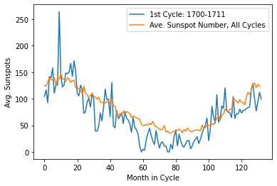
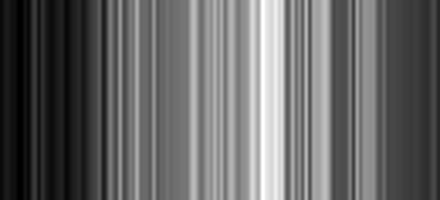
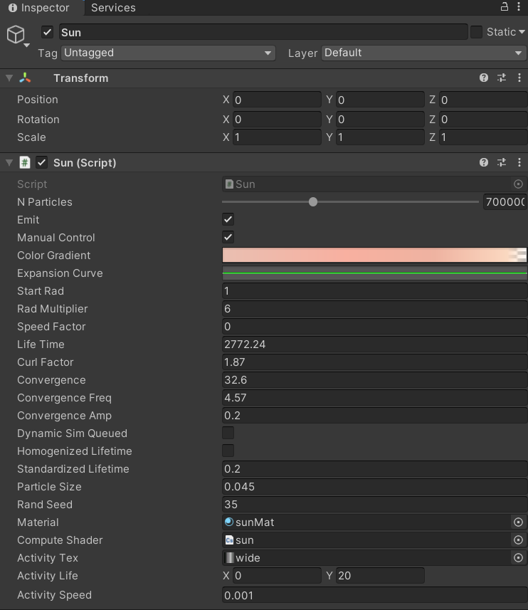

Merging analytical data with visually-based models.
Introduction
As an undergrad looking to make their way into the astrophysics world, you're encouraged to take on a reasearch project by at least junior year into your major. Soon after your first semester, you're hit with the stark realization that you truly just signed the next 7-10 years of your life away, and by your junior year you've come to terms with the fact that you're in too deep to change course. All is not doom and gloom though, you came into college with a beautiful imagination and a yearning to study the cosmos, understand the origin of the stardust we're all seemingly made of and figure out what else it's out there doing. Well, at least thats how I like to look at it, it's a great distraction from the weekend-consuming E&M and computational homeworks. An even better distraction did come by last semester though as my friend Ruby told me she was working on analyzing sunspot data from NOAA's Solar and Upper Atmosphere Data and trying to fit a model she was developing to it. She explained the project to me and somehow I convinced her to help me animate the data in Unity. We soon got to work on sorting the data, prepping it for the model, and exporting it to unity in an attempt to create a loosely data-driven model of the sun.
Data Preperation & Export
Before sorting through the data, we first acquired mean sunspot counts from NOAA's database where it's seperated into monthly and yearly collections. For our purposes, we make use of the monthly data since it's easier to break up and categorize into periodic sun cycles. The monthly sunspot data is stored as a csv and read into a Pandas dataframe where it can be be rearranged and broken up so it's easier to work with.
One of the first objectives we had with the data was to organize it into natural sun cycle patterns, where we can keep track of exactly whicch months in which year belong in a given cycle. Starting this project, I had no idea how a solar cycle lasted or even the span of the data we were working with, so this part was done almost exclusively by Ruby after she gave me a masterful explanation on the topic, and I was still unable to completely grasp it. From what I remember though, a sun cycle lasts 11 years (132 months), and we had at hand data spanning from 1749 up to 2020. Quite a lot of data to manage, but nothing a simple sorting algorithm in python can't handle. After our sort we ended up with a graph of the first cycle (1749-1762), with the number of sunspots shown on the y axis against the month in the cyle on the x. We transposed the average number of sunspots/month in cycle (shown by the blue curve) on top just to get an idea of how active our first cycle was relative to the others.
At this point our data is stratified into a matrix of 132 months by 24 solar cycles, now perfectly represting our sunspot data of nearly 300 years 0: We want to export some of this data to Unity to help us give life to our sun animation, but first we have to make a decision on how precise we want our model to be. In our case, our sun model is almost exclusively driven by perlin noise, so interfacing it with sunspot data can be interpreted as modulating the amplitude of the simplex function based off of the intensity of solar activity as given by examining a particular sun cycle. In layman's terms, this means we feed our simplex model the normalized intensity of the Sun for each given month throughout its current cycle. An easy way to achieve this, given we already constructed our sunspot matrix is to transform it into a 2D BW texture, with each row representing a cycle and the pixel values of each row calculated by taking the sunspot count of that particular array element and dividing it by the row maximum. This is simply normalizing our sunspot matrix and transforming it into a 2D texture of the same size. Below, I do this for only the first row, and end up with a texture representing the normalized sunspot count of the first cycle! We can now mark this image for export and move on to Unity!
#We first import PIL which contains our Image handler functions
from PIL import Image
#construct pixel values for our first cyle which corresponds to the 0th row of our sn_mat Matrix
firstSegment = sn_mat[0] / np.amax(sn_mat[0]) * 255
#convert our first segment to an image object using handy PIL libraries
im = Image.fromarray(np.resize(firstSegment, (1, 132)))
plt.imshow(im)
#We save our BW image as wide.bmp
im.convert('RGB').save('wide.bmp')
Import and Visualization
Our data is ready and now packaged into a form which can be easily be visually recognized,  and more importantly, translated and intepreted between our C# instructed cpu and HLSL gpu cores. In this case, we utilize Unity's C# libraries to read our BW texture and construct the proper functions to pass it to our gpu which is where our simplex function lives and our particle motion is defined.
In Unity we have our Sun.cs script which allows us to create a Texture2D object which we can use to drop our exported image to via the editor. Our Sun script also has references to our gpu code which is in the form of a Compute Shader, sun.compute (all of these variables are exposed in the editor for easy assignment). In our Sun.cs Update function, we pass the Texture2D object to our Update kernel in the compute shader, this is done every time before we "Dispatch" the gpu to perform particle computations. We do this pre-emptively so that the gpu has the texture to read from before it can derive our simplex function's amplitude, which depend on the texture. We then call dispatch on our compute shader and the magic on the gpu side happens
void DispatchUpdate()
{
computeShader.SetFloat("deltaTime", Time.realtimeSinceStartup); //How long our program has been running
computeShader.SetVector("Time", time); //A vector to keep track of cpu time
computeShader.SetVector("activityTime", activityLife);
computeShader.SetTexture(UpdateKernel, "colorGradient", colorTex); //A Texture2D representing particle color gradient
computeShader.SetTexture(UpdateKernel, "activityTexture", activityTex); //Our Sun activity texture "wide.bmp"
computeShader.SetBuffer(UpdateKernel, "Particles", Particles); //Our RWStructured buffer holding particle objects
computeShader.SetBuffer(UpdateKernel, "randFactors", randFactors);
computeShader.SetFloat("curlFactor", curlFactor);
computeShader.SetBuffer(UpdateKernel, "speedCurve", expansionBuffer);
computeShader.Dispatch(UpdateKernel, warpCount, 1, 1); //Tell our GPU cores to get busy!
}
To understand the logic behind the gpu bound particle operations, it's worth explaining how our 132x1 activity texture will be interpreted by our particles. In this case, each particle on the GPU goes through the same operations and it's fluid-like motions as part of the sun's corona are largely governed by our simplex noise function. The reason why we have varied particle motion even though all particles are directed by the same function, is in simple terms, due to the nature of the 3D noise functions which input particle position vector Xn (unique for each of the 1 out of millions of particles in our sun simulation), amplitude ω, and frequency F to outputs position Xn+1. Now to make use of our activity texture, instead of keeping the ω of every particle constant, we set it equal to the pixel intensity in our texture interpolating from one pixel value to the next. If you remember, this is effectively tying our ω to the sunspot intensity of each month.
With the logic out of the way, we can now express our theory of particle motion in code. We start off much like we did on the C# end of things by declaring our Texture object which we will inherit from the cpu via our function from Sun.cs. On our GPU, we dispatch the Update function, wherein we check that the particle is alive and compute a convergence factor for our ω by calling Activity Factor which reads the pixel value at a given t within our 132 month cycle.
float activityFactor(float2 ActivityTime)
{
return activityTexture.Load(int3(round(ActivityTime.x / ActivityTime.y * 132), 0, 0));
}
Notice below that t is given by the ratio activityTime.x % activityTime.y, where ActivityTime is a vector2 in which the x component is our system time and the y, the time we want each "solar cycle" to last in realtime. After deriving our convergence from ActivityFactor, we calculate ω, and pass our curlNoise function the variables such that we can utilize it for the particle position.
//compute the convergence of our amplitude by reading from our BW texture
float _convergence = activityFactor(float2(activityTime.x % activityTime.y, activityTime.y));
//determine our particle velocity by invoking the simplex function, utilizing _convergence for amplitude
p.velocity += curlNoise(float3(p.position.x, p.position.y, p.position.z) * Time.x * convergence - p.velocity) * (pow(curlFactor, _convergence) * randFactors[id.x]) * Time.x / 40;
//update our particle position using a dampened velocity
p.position += p.velocity * speedCurve[round(tSinceSpawn / maxLife * 64.0)] * Time.x / 1.0;
Closing
At the end of all of this, we end up with a crude but visually fascinating model of the sun that now has a vague influence from the NOAA's sunspot data. We can of course extrapolate the bounds of our little project to get a visualization of what the sun may have been doing for the past 300 years, as opposed to just 1749 - 1762! I hope you had fun reading about Ruby and myself's little coding freak escapade : )